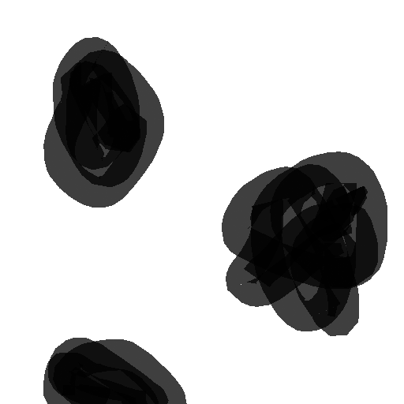
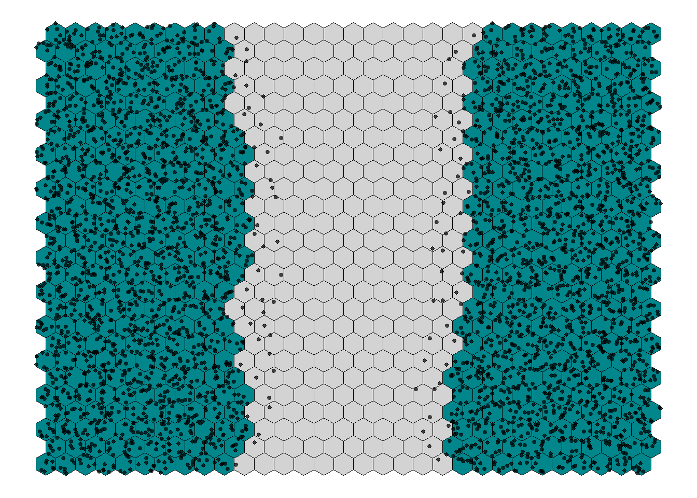

source("code/mapping.R")
source("code/model.R")report-notebook
Jan 2026
This is a markdown document made in RStudio. It’s a great way for me to share code and figures by directly accessing them in my code rather than copy-pasting images.
Currently my code is structured such that I have a script for functions related to modelling and a script for functions related to plotting/mapping. To run simulations I source both of those scripts:
then call whatever functions as I need them. I ran into many problems getting it to this state of functionality. I’ll spare you the details, but it’s exciting to be at this point, to look at my assumptions with greater detail, and incorporate more nuance and complexity.
These first functions import an image of a “landscape”, break it into a hex grid, and assign a simple “high” or “low” habitat quality to each hex based on the colour/lightness of the contributing pixels.
blob_landscape <- load_landscape(
"images/blobs.png",
scale = 0.5, # Shrink or grow image
cellsize = 10) # Lower gives finer detail
blob_landscape <- basic_habitat_quality(blob_landscape, threshold = 0.5)
blob_landscape$Q <- ifelse(blob_landscape$type == "high", 1, 0)Here’s what this landscape looks like:

Here it is as hexes:
visualise_landscape(blob_landscape)
And, for fun, here is the rough shape of our field site at Andy’s clear cut, hexified:

The general idea is to populate the landscape with FTC by specifying the relative density per hex. Total density for the image sums to 1, so if a particular hex had 0.05 density you would interpret it as “of all the FTC in this area, 5% of them are in this hex”. Because we have been looking at FTC dispersing out of suitable habitat, let’s initialize the landscape with no FTC in the low quality areas (grey) and an even distribution of FTC in the high quality areas (green).
timesteps <- 4
H <- matrix(0, nrow = nrow(nb_landscape), ncol = timesteps)
H[nb_landscape$type == "high",1] = 1
H[,1] <- H[,1] / sum(H[,1])Here’s a visualisation of this initial density.
dots <- dot_density_points(nb_landscape, density = H[,1], dot_clutter = 5)
visualise_landscape(nb_landscape, dots = dots, dotsize = 1, show_legend = FALSE)
Now we want to disperse these FTC across the landscape according to a dispersal kernel at regular time steps. First, compute possible “destination” hexes for each “origin” hex, and the associated distances:
max_host_dispersal <- 12
neighbs <- compute_neighbors(nb_landscape, max_host_dispersal)
dists <- compute_sparse_distance(nb_landscape, neighbs, max_host_dispersal)max_host_dispersal is the maximum number of hexes an FTC will disperse. We know that some FTC fly very far, but for practical reasons we will set this to capture most of the dispersers. We can potentially incorporate long distance dispersers later. For now, we consider short-range dispersal and set a max range of 12 hexes (~300m at this hex size) and move on to set up the dispersal kernel:
scale <- 2
stay_prob <- 0.5
beta <- 1
K <- initialize_dispersal(
dists, # sparse distance matrix
scale, # drop-off scale
stay_prob, # probability of staying in cell
kernel_function = "negative_exp",
beta, # habitat preference strength
Q = nb_landscape$Q # habitat quality vector
)To initialize dispersal we take a few inputs: A kernel_function, which is the distribution FTC will draw from to disperse - in this case I’m using a very simple negative exponential function: \(e^{(-\frac{dists}{scale})}\) - where dists is the distance matrix calculated a moment ago and scale is a parameter that sets how “slow” movement distance drops off (higher number mean more FTC disperse further). stay_prob is the probability of an FTC just staying put and not dispersing (0.5 for now) and beta is a parameter that controls how much an FTC prefers moving towards high quality habitat.
Now a for loop to simulate multiple instances of dispersal.
for (i in 2:timesteps) {
H[,i] <- disperse(
kernel = K,
density = H[,i-1],
survival = 1
)
}After one round of dispersal:

After two rounds:
After three rounds:
I don’t think my kernel function is scaling appropriately, or max_host_dispersal is really reflecting the number of hexes.
An interesting thing to note is that this landscape is a cylinder. When FTC encounter the sides they wrap around to the other side and when they encounter the top, they fall off1.
Briefly, some ideas for what to do next:
Check distance calculations
Check boundary conditions
Explore the current “parameter space” by changing the dispersal kernel, survival, “staying-in-place” prob, and habitat preference parameters
Incorporate parasitoids
Incorporate density dependent movement. Organisms should prioritize better habitat, but they should also avoid overcrowding.
Incorporate more complex resources. E.g., more categories than just “high” and “low” and give habitats the ability to change quality (be depleted)
Incorporate edge effects. Something like, use a different movement kernel when moving between hexes of different quality
Track growth and death on the landscape
Would you like to see anything done with what I have right here? I can try different landscapes and parameters.
Footnotes
For awhile I was working with absorbing boundaries everywhere and incorporated horizontal wrapping more recently, I just realized I might not have correctly re-applied absorbing conditions on the top and bottom so I’ll have to check that.↩︎